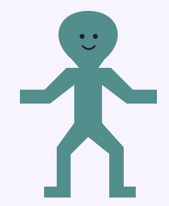
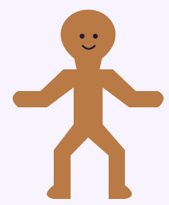
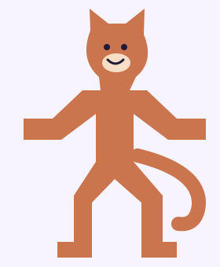
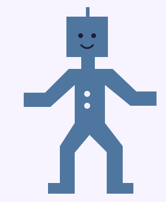

Pen (перо) создаёт контур из точек и соединяющих их линий. Щелчок добавляет точку с острым углом, нажатие с протягиванием позволяет создать плавный изгиб. Чтобы замкнуть контур, нажми на первую точку.
Для работы используй английскую раскладку. Перед нажатием клавиш заверши ввод текста.
PPen: рисовать по точкам
EnterРедактировать выбранную фигуру
VMove: выделять и двигать точки
EscВыйти из текущего режима
Сначала пробуем
Молния и сердечко
Потренируйся создавать прямые отрезки и плавные линии. После рисования измени обе фигуры перемещением точек.
01 / Молния: прямые и углы
Нажми P и поставь точки щелчками, повторяя угловатый контур молнии.
Нажми на первую точку, чтобы замкнуть контур.
Нажми Esc, выбери фигуру и настрой Fill (заливку).
Нажми Enter, выбери точку и передвинь её. Измени ширину молнии или длину кончика. Закончив, нажми Esc.
02 / Сердечко: плавные линии
Нажми P. При постановке точки нажми и протяни мышь: появятся направляющие изгиба.
Нарисуй сердечко с округлыми половинками. В нижнем кончике и верхней выемке ставь угловые точки обычным щелчком. Замкни контур.
Выдели сердечко и нажми Enter. Передвигай точки, чтобы исправить форму.
Потяни за конец направляющей: измени её длину и направление. Посмотри, как меняется округлость сердечка.
Точка задаёт положение контура, направляющие управляют изгибом рядом с ней.
Готовим героя к движению
Цельный силуэт и удобные сгибы
Тело, руки и ноги должны образовывать один одноцветный силуэт. Глаза и рот можно оставить отдельными деталями. У локтей и коленей предусмотрены точки с обеих сторон конечности.
Жёлтые метки показывают пары точек у сгибов. Добавлять такие метки своему герою не нужно. Нажми на схему, чтобы открыть её крупнее.
В режиме редактирования нажми V и выдели нужные точки рамкой. Передвигай несколько точек вместе, чтобы рука или нога сохраняла толщину. Начни с небольшого движения и проверь силуэт.
Можно использовать стандартные фигуры
Соединяй детали, нарисованные пером, с кругами и прямоугольниками. Части тела должны перекрываться. Выдели их и примени Union selection (объединение). Сохрани запасную копию, затем выполни Flatten, чтобы получить редактируемый векторный контур. Глаза и рот в объединение тела не включай.
Стандартную фигуру тоже можно изменить: выдели её, нажми Enter и передвинь точки.
Выбираем образ
Пять персонажей для вдохновения
Первые три героя состоят из простого тела и лица. У кота и робота есть небольшие дополнительные детали. Ты можешь взять образец, придумать своего персонажа или упростить узнаваемого героя.
ПростойЧеловечекПростой

ПришелецПростой

Пряничный человечекС деталями

КотС деталями

Робот
Сначала подумай о музыке. Какой герой подходит её настроению и ритму: смешной, спокойный, энергичный или загадочный? Образ персонажа и его движения должны сочетаться с выбранным фрагментом.
Самостоятельная работа
Твой герой. Твоя музыка. Твой танец.
Создай персонажа и научись менять его позу движением точек. Подготовь небольшой танец для общего шуточного ролика.
Войди в свой аккаунт Figma и работай в собственной копии. В шаблоне уже есть инструкции, образцы и свободные рабочие фреймы. Инструкции и PNG-образцы заблокированы.
Выбери музыку. Подготовь короткий фрагмент на телефоне и придумай героя, которому он подходит.
Нарисуй персонажа. Используй Pen. При необходимости добавь стандартные фигуры и объедини их. Тело, руки и ноги сделай цельными и одноцветными.
Подготовь сгибы. Предусмотри точки с обеих сторон локтей и коленей. Добавь лицо и при желании одну-две небольшие детали. Руки, ноги и тело оставь без узоров.
Придумай танец. Сохрани исходного героя рядом. Двигай точки рук и ног, пробуй разные позы. Следи за толщиной конечностей и аккуратностью контура.
Покажи результат. Включи мелодию на своём телефоне и двигай персонажа в её ритме для съёмки общего шуточного ролика.
Проверь перед съёмкой
Отмечай пункты после проверки своей работы в Figma.